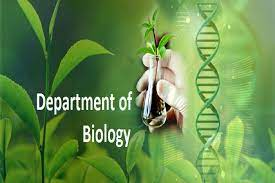
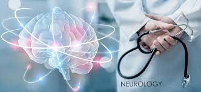

DEPARTMENTS
-

Biology
The Biology Department at Dream University offers a wide range of courses and research opportunities in various areas of biological sciences. Our faculty members are dedicated to fostering a deep understanding of living organisms and their interactions with the environment.
-
Chemistry
The Chemistry Department at Dream University is committed to exploring the fundamental principles and applications of chemistry. From organic chemistry to physical chemistry, students have the opportunity to engage in hands-on experiments and cutting-edge research.
-

Physics
The Physics Department at Dream University offers a comprehensive curriculum that covers classical and modern physics. Students gain a deep understanding of the laws that govern the universe and have access to state-of-the-art facilities for conducting experiments and simulations.
-
Astronomy
The Astronomy Department at Dream University explores the vast wonders of the universe. Students have the opportunity to study celestial objects, planetary systems, and the origins of the universe through both observational and theoretical approaches.
-
Environmental Science
The Environmental Science Department at Dream University examines the interactions between humans and the natural environment. Students explore topics such as sustainability, conservation, and environmental policy to address complex environmental challenges.
-
Mathematics
The Mathematics Department at Dream University offers courses in various branches of mathematics, including calculus, algebra, geometry, and statistics. Students develop problem-solving and analytical skills while exploring the beauty and applications of mathematical concepts.
-
Zoology
The Zoology Department at Dream University focuses on the study of animal biology, behavior, and conservation. Students learn about animal anatomy, physiology, and ecology, and have opportunities for fieldwork and hands-on research in diverse ecosystems.
-
Medicine
The Medicine Department at Dream University offers comprehensive medical education and training. Students gain theoretical knowledge and practical skills to become skilled healthcare professionals, focusing on patient care, diagnosis, treatment, and prevention.
-
Nursing
The Nursing Department at Dream University prepares students to provide compassionate and competent nursing care. Students learn about patient assessment, healthcare ethics, medical-surgical nursing, pediatric nursing, and other specialized areas of nursing practice.
-

Medical Laboratory
The Medical Laboratory Department at Dream University focuses on laboratory science and technology in healthcare. Students learn to perform diagnostic tests, analyze samples, and contribute to disease diagnosis, monitoring, and treatment.
-

Chemical Engineering
The Chemical Engineering Department at Dream University focuses on the application of chemical principles to design and operate chemical processes. Students learn about thermodynamics, reaction kinetics, process control, and sustainable chemical engineering practices.
-

Neurology
The Neurology Department at Dream University explores the structure, function, and disorders of the nervous system. Students learn about neuroanatomy, neurophysiology, and neurologic diseases, and have the opportunity to contribute to research in neuroscience.